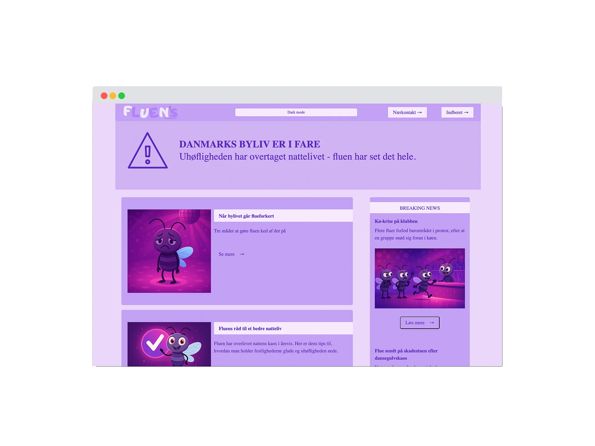
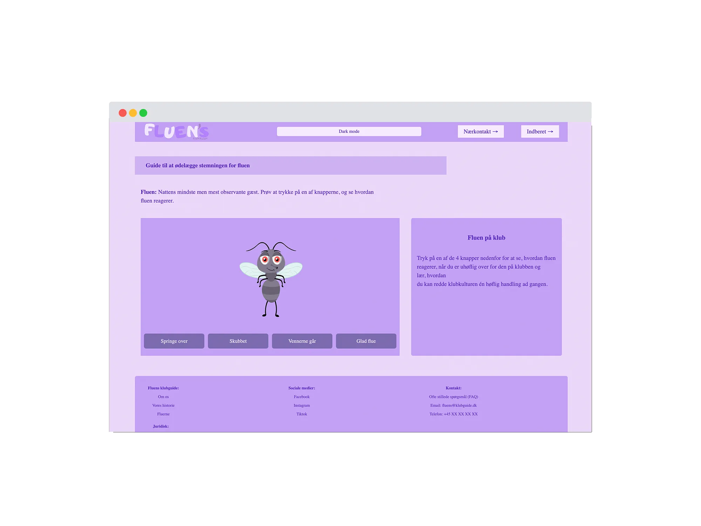
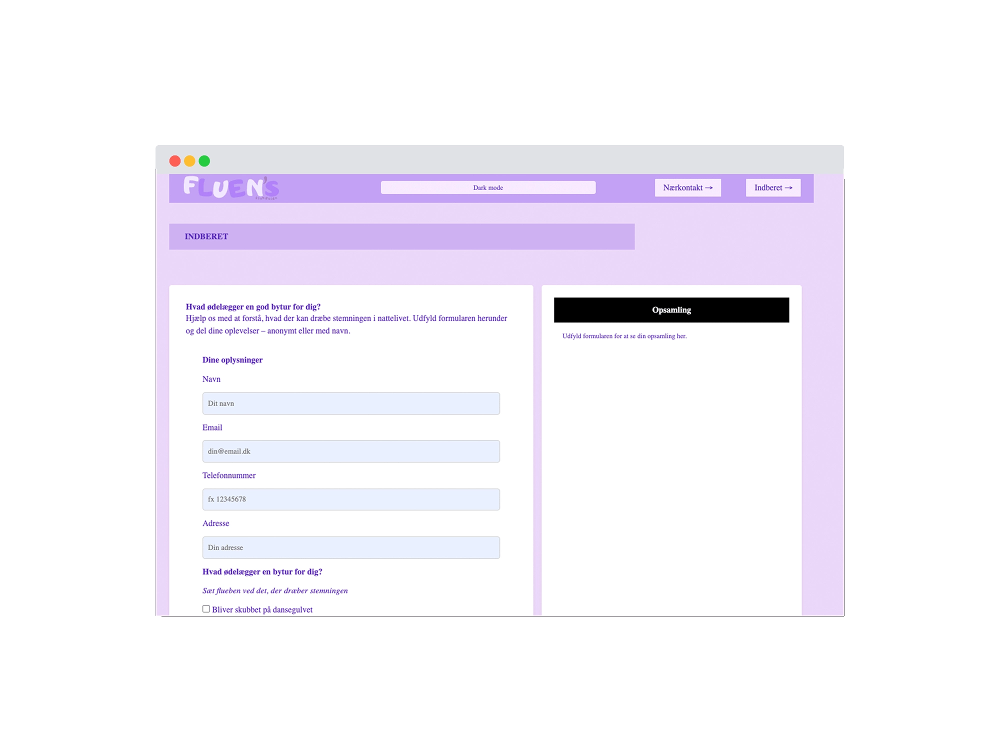
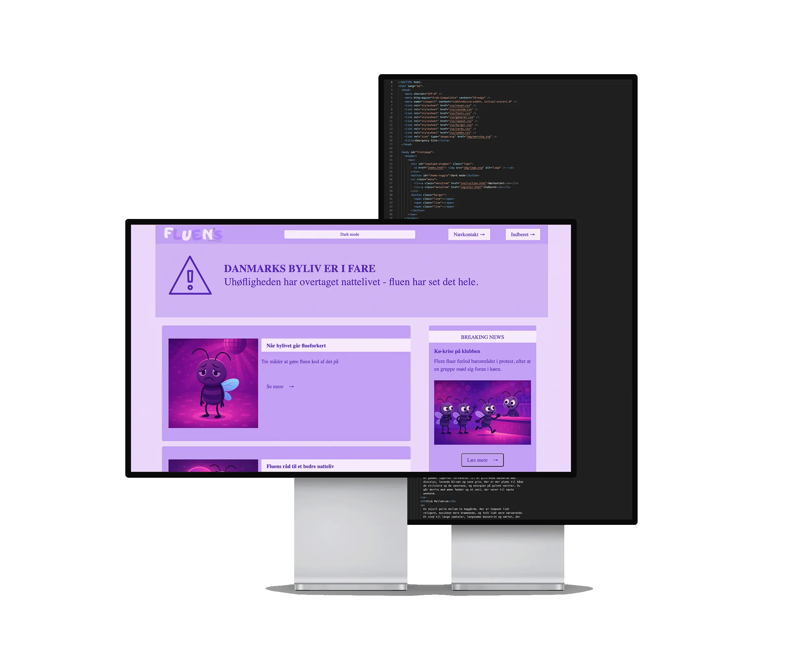
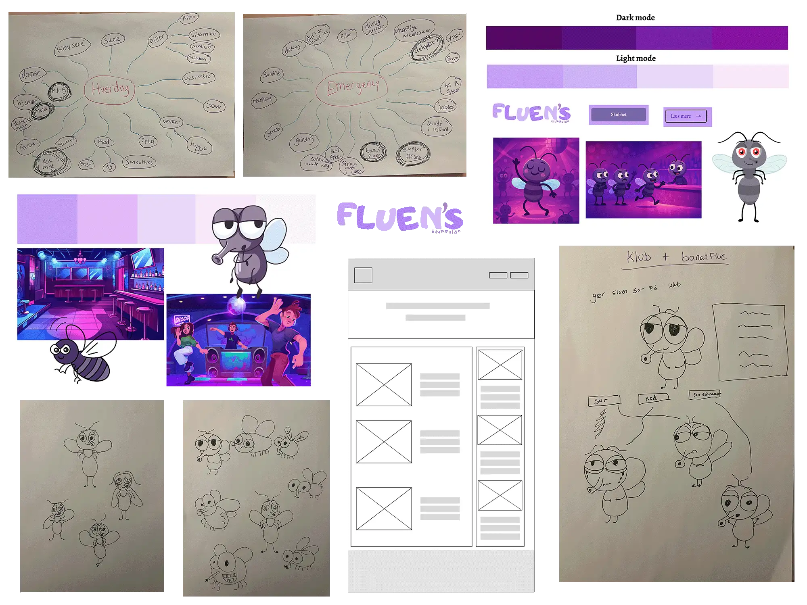
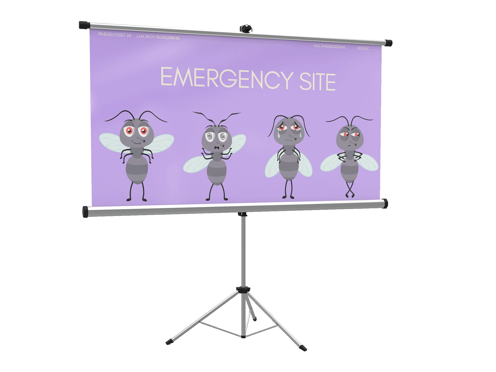

Emergency site - Fluens guide
Se hjemmesiden her


Opgave:
Opgaven gik ud på at lave et interaktivt Emergency Site ud fra et udleveret website-fundament, hvor man selv valgte og fortolkede en nødsituation og lavede et visuelt udtryk, der passede til idéen.
Løsning:
Jeg har udviklet et Emergency Site om etik i nattelivet, formidlet gennem en humoristisk og interaktiv fortælling om en flue. Forsiden består af pop up-nyheder, der introducerer temaet og sætter stemningen. Sitet indeholder også en interaktiv natteguide, hvor fluen guider brugeren, som via knapper kan vælge handlinger og se konsekvenserne gennem ændrede ansigtsudtryk og forklarende tekst. Derudover er der en formularside, hvor brugeren kan dele, hvad der ødelægger en bytur, og dermed blive aktivt inddraget i temaet.

Proces:
Processen startede med to mindmaps ud fra ordene hverdag og emergency, hvor ord blev kombineret til tre idéer, som blev skitseret som interaktive løsninger. Jeg valgte idéen om klub og bananflue og udviklede den til en fortælling om en flue. Fluen blev skitseret i forskellige udtryk, hvorefter illustrationer og logo blev udviklet i Illustrator. Derudover lavede jeg et moodboard og styletile, som dannede grundlag for det visuelle udtryk med lilla nuancer og et legende, neoninspireret nattelivstema. Målet var at skabe et informativt og underholdende site, der formidler etik i nattelivet gennem humor og visuel enkelhed.
Se proces i Figma her
Feedback og refleksion:
Opgaven var ret udfordrende, især JavaScript, men jeg er stadig godt tilfreds med resultatet. Sitet blev opfattet som sjovt og nemt at bruge, men fik også feedback på, at farvepaletten kunne have haft mere kontrast, da logoet havde tendens til at forsvinde i light mode. Opgaven har gjort det tydeligt for mig, at jeg nok bør holde løsningerne mere enkle og være bedre til at dokumentere processen.
Læring:
Gennem denne opgave har jeg opnået viden og færdigheder inden for frontend teknologier, herunder HTML, CSS og JavaScript, med særligt fokus på interaktive elementer som dark mode og light mode samt bevægelse i brugergrænsefladen. Jeg har arbejdet med SVG grafik, hvor elementer er lagt oven på hinanden og skiftes dynamisk ved hjælp af JavaScript. Jeg har samtidig genopfrisket mine kompetencer i Adobe Illustrator i forbindelse med vektordesign. Samlet set har projektet styrket min forståelse for designprocesser, dokumentation og systematisk arbejde med interaktive brugergrænseflader.
